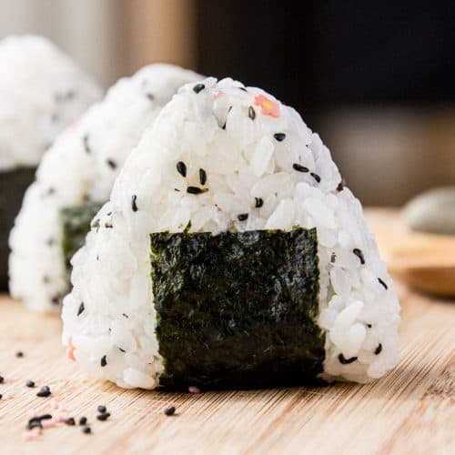

Onigiri

Description
A traditional Japanese snack made of rice. Its a cute shape and easy to store. A good treat to eat on the go.
Ingredients
- Cooked Rice
- Furikake seasoning
- Nori (seaweed wrap)
Steps
- Pop your cooked rice into a nice mixing bowl. Add the furikake or rice flavouring and mix through evenly. Separate the rice into equal portions, big enough to be a large handful each.
- Wet your hands with water and rub together with a pinch or two of salt. This stops the rice sticking to your hands and helps keep it fresher for longer.
- Take up one portion of rice in your hands.
- If you are hiding some fillings inside, here is where you make an indent, place the ingredients inside and fold the rice over, then lightly press into a ball.
- Using mainly your fingertips while resting the rice on your palm, start to press and squeeze the rice into a triangular shape, rotating as you go so it’s even.
- Place a slice of nori on the bottom of the onigiri (the rough side should face the rice) and fold it up towards to the middle of the onigiri.
Go Back